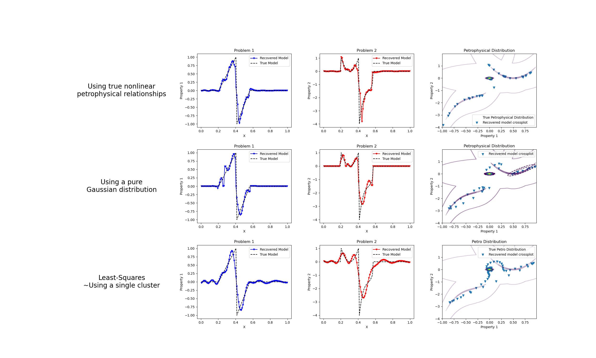

Note
Click here to download the full example code
Petrophysically guided inversion: Joint linear example with nonlinear relationships#
We do a comparison between the classic least-squares inversion and our formulation of a petrophysically guided inversion. We explore it through coupling two linear problems whose respective physical properties are linked by polynomial relationships that change between rock units.
SimPEG.InvProblem will set Regularization.reference_model to m0.
SimPEG.InvProblem will set Regularization.reference_model to m0.
SimPEG.InvProblem will set Regularization.reference_model to m0.
SimPEG.InvProblem is setting bfgsH0 to the inverse of the eval2Deriv.
***Done using the default solver Pardiso and no solver_opts.***
Alpha scales: [3.456351510282569, 0.0, 3.4567008422694375e-06, 0.0]
Calculating the scaling parameter.
Scale Multipliers: [0.09369146 0.90630854]
<class 'SimPEG.regularization.pgi.PGIsmallness'>
Initial data misfit scales: [0.09369146 0.90630854]
model has any nan: 0
=============================== Projected GNCG ===============================
# beta phi_d phi_m f |proj(x-g)-x| LS Comment
-----------------------------------------------------------------------------
x0 has any nan: 0
0 1.89e+01 1.50e+05 0.00e+00 1.50e+05 1.41e+02 0
geophys. misfits: 535.4 (target 15.0 [False]); 33.8 (target 15.0 [False]) | smallness misfit: 1488.4 (target: 100.0 [False])
Beta cooling evaluation: progress: [535.4 33.8] ; minimum progress targets: [120000. 120000.]
1 1.89e+01 8.08e+01 2.05e+01 4.69e+02 7.45e+01 0
geophys. misfits: 242.5 (target 15.0 [False]); 7.5 (target 15.0 [True]) | smallness misfit: 680.5 (target: 100.0 [False])
Beta cooling evaluation: progress: [242.5 7.5] ; minimum progress targets: [428.4 27. ]
Updating scaling for data misfits by 2.010519744454068
New scales: [0.1720768 0.8279232]
2 1.89e+01 4.79e+01 1.99e+01 4.25e+02 8.26e+01 0 Skip BFGS
geophys. misfits: 104.7 (target 15.0 [False]); 7.3 (target 15.0 [True]) | smallness misfit: 612.1 (target: 100.0 [False])
Beta cooling evaluation: progress: [104.7 7.3] ; minimum progress targets: [194. 15.]
Updating scaling for data misfits by 2.0462720853966854
New scales: [0.29839345 0.70160655]
3 1.89e+01 3.64e+01 2.08e+01 4.30e+02 7.18e+01 0
geophys. misfits: 50.8 (target 15.0 [False]); 7.5 (target 15.0 [True]) | smallness misfit: 571.3 (target: 100.0 [False])
Beta cooling evaluation: progress: [50.8 7.5] ; minimum progress targets: [83.7 15. ]
Updating scaling for data misfits by 1.9972672672546747
New scales: [0.45929528 0.54070472]
4 1.89e+01 2.74e+01 2.14e+01 4.33e+02 7.08e+01 0 Skip BFGS
geophys. misfits: 30.7 (target 15.0 [False]); 8.3 (target 15.0 [True]) | smallness misfit: 540.4 (target: 100.0 [False])
Beta cooling evaluation: progress: [30.7 8.3] ; minimum progress targets: [40.7 15. ]
Updating scaling for data misfits by 1.8067317121786268
New scales: [0.60547709 0.39452291]
5 1.89e+01 2.18e+01 2.18e+01 4.34e+02 6.48e+01 0 Skip BFGS
geophys. misfits: 23.1 (target 15.0 [False]); 9.9 (target 15.0 [True]) | smallness misfit: 513.2 (target: 100.0 [False])
Beta cooling evaluation: progress: [23.1 9.9] ; minimum progress targets: [24.5 15. ]
Updating scaling for data misfits by 1.5127839790264341
New scales: [0.69894754 0.30105246]
6 1.89e+01 1.91e+01 2.20e+01 4.35e+02 4.92e+01 0 Skip BFGS
geophys. misfits: 20.2 (target 15.0 [False]); 12.0 (target 15.0 [True]) | smallness misfit: 491.9 (target: 100.0 [False])
Beta cooling evaluation: progress: [20.2 12. ] ; minimum progress targets: [18.5 15. ]
Decreasing beta to counter data misfit decrase plateau.
Updating scaling for data misfits by 1.2485129783447346
New scales: [0.74350082 0.25649918]
7 9.45e+00 1.81e+01 2.20e+01 2.26e+02 7.15e+01 0 Skip BFGS
geophys. misfits: 11.7 (target 15.0 [True]); 8.2 (target 15.0 [True]) | smallness misfit: 517.5 (target: 100.0 [False])
Beta cooling evaluation: progress: [11.7 8.2] ; minimum progress targets: [16.2 15. ]
Warming alpha_pgi to favor clustering: 1.5588936356655474
8 9.45e+00 1.08e+01 2.32e+01 2.30e+02 2.78e+01 0
geophys. misfits: 11.6 (target 15.0 [True]); 10.6 (target 15.0 [True]) | smallness misfit: 459.1 (target: 100.0 [False])
Beta cooling evaluation: progress: [11.6 10.6] ; minimum progress targets: [15. 15.]
Warming alpha_pgi to favor clustering: 2.1127903907176244
9 9.45e+00 1.13e+01 2.37e+01 2.35e+02 2.67e+01 0
geophys. misfits: 11.5 (target 15.0 [True]); 13.1 (target 15.0 [True]) | smallness misfit: 416.6 (target: 100.0 [False])
Beta cooling evaluation: progress: [11.5 13.1] ; minimum progress targets: [15. 15.]
Warming alpha_pgi to favor clustering: 2.588137855814081
10 9.45e+00 1.19e+01 2.40e+01 2.39e+02 3.71e+01 0 Skip BFGS
geophys. misfits: 11.5 (target 15.0 [True]); 15.3 (target 15.0 [False]) | smallness misfit: 386.6 (target: 100.0 [False])
Beta cooling evaluation: progress: [11.5 15.3] ; minimum progress targets: [15. 15.]
Decreasing beta to counter data misfit increase.
Updating scaling for data misfits by 1.3061828151514434
New scales: [0.68936138 0.31063862]
11 4.73e+00 1.27e+01 2.39e+01 1.26e+02 6.83e+01 0 Skip BFGS
geophys. misfits: 9.2 (target 15.0 [True]); 8.0 (target 15.0 [True]) | smallness misfit: 436.4 (target: 100.0 [False])
Beta cooling evaluation: progress: [9.2 8. ] ; minimum progress targets: [15. 15.]
Warming alpha_pgi to favor clustering: 4.5495688280985105
12 4.73e+00 8.80e+00 2.63e+01 1.33e+02 3.92e+01 0
geophys. misfits: 9.3 (target 15.0 [True]); 11.0 (target 15.0 [True]) | smallness misfit: 351.8 (target: 100.0 [False])
Beta cooling evaluation: progress: [ 9.3 11. ] ; minimum progress targets: [15. 15.]
Warming alpha_pgi to favor clustering: 6.776672564636674
13 4.73e+00 9.82e+00 2.77e+01 1.41e+02 4.32e+01 0
geophys. misfits: 9.3 (target 15.0 [True]); 13.9 (target 15.0 [True]) | smallness misfit: 290.2 (target: 100.0 [False])
Beta cooling evaluation: progress: [ 9.3 13.9] ; minimum progress targets: [15. 15.]
Warming alpha_pgi to favor clustering: 9.11746526965902
14 4.73e+00 1.07e+01 2.88e+01 1.47e+02 4.04e+01 0 Skip BFGS
geophys. misfits: 9.5 (target 15.0 [True]); 17.5 (target 15.0 [False]) | smallness misfit: 246.6 (target: 100.0 [False])
Beta cooling evaluation: progress: [ 9.5 17.5] ; minimum progress targets: [15. 15.]
Decreasing beta to counter data misfit increase.
Updating scaling for data misfits by 1.5788233229219961
New scales: [0.58430118 0.41569882]
15 2.36e+00 1.28e+01 2.84e+01 8.00e+01 5.76e+01 0 Skip BFGS
geophys. misfits: 8.6 (target 15.0 [True]); 8.5 (target 15.0 [True]) | smallness misfit: 292.0 (target: 100.0 [False])
Beta cooling evaluation: progress: [8.6 8.5] ; minimum progress targets: [15. 15.]
Warming alpha_pgi to favor clustering: 16.052059946206228
16 2.36e+00 8.53e+00 3.39e+01 8.87e+01 6.37e+01 0
geophys. misfits: 8.9 (target 15.0 [True]); 11.1 (target 15.0 [True]) | smallness misfit: 213.3 (target: 100.0 [False])
Beta cooling evaluation: progress: [ 8.9 11.1] ; minimum progress targets: [15. 15.]
Warming alpha_pgi to favor clustering: 24.46565941156895
17 2.36e+00 9.78e+00 3.67e+01 9.66e+01 7.84e+01 0
geophys. misfits: 9.3 (target 15.0 [True]); 12.2 (target 15.0 [True]) | smallness misfit: 171.5 (target: 100.0 [False])
Beta cooling evaluation: progress: [ 9.3 12.2] ; minimum progress targets: [15. 15.]
Warming alpha_pgi to favor clustering: 34.81630831322642
18 2.36e+00 1.05e+01 3.98e+01 1.05e+02 7.37e+01 0
geophys. misfits: 9.6 (target 15.0 [True]); 14.0 (target 15.0 [True]) | smallness misfit: 139.4 (target: 100.0 [False])
Beta cooling evaluation: progress: [ 9.6 14. ] ; minimum progress targets: [15. 15.]
Warming alpha_pgi to favor clustering: 45.85270548053809
19 2.36e+00 1.14e+01 4.24e+01 1.12e+02 8.05e+01 0
geophys. misfits: 10.2 (target 15.0 [True]); 17.2 (target 15.0 [False]) | smallness misfit: 114.2 (target: 100.0 [False])
Beta cooling evaluation: progress: [10.2 17.2] ; minimum progress targets: [15. 15.]
Decreasing beta to counter data misfit increase.
Updating scaling for data misfits by 1.471322693112527
New scales: [0.48857543 0.51142457]
20 1.18e+00 1.38e+01 4.11e+01 6.24e+01 8.24e+01 0
geophys. misfits: 9.5 (target 15.0 [True]); 12.0 (target 15.0 [True]) | smallness misfit: 131.4 (target: 100.0 [False])
Beta cooling evaluation: progress: [ 9.5 12. ] ; minimum progress targets: [15. 15.]
Warming alpha_pgi to favor clustering: 64.97532712199992
21 1.18e+00 1.08e+01 4.86e+01 6.82e+01 8.50e+01 0
geophys. misfits: 9.1 (target 15.0 [True]); 8.7 (target 15.0 [True]) | smallness misfit: 124.0 (target: 100.0 [False])
Beta cooling evaluation: progress: [9.1 8.7] ; minimum progress targets: [15. 15.]
Warming alpha_pgi to favor clustering: 109.31457730535797
22 1.18e+00 8.92e+00 6.14e+01 8.15e+01 9.55e+01 0
geophys. misfits: 10.2 (target 15.0 [True]); 11.8 (target 15.0 [True]) | smallness misfit: 104.9 (target: 100.0 [False])
Beta cooling evaluation: progress: [10.2 11.8] ; minimum progress targets: [15. 15.]
Warming alpha_pgi to favor clustering: 149.6925382535705
23 1.18e+00 1.10e+01 6.89e+01 9.24e+01 1.04e+02 0
geophys. misfits: 10.5 (target 15.0 [True]); 11.5 (target 15.0 [True]) | smallness misfit: 96.5 (target: 100.0 [True])
All targets have been reached
Beta cooling evaluation: progress: [10.5 11.5] ; minimum progress targets: [15. 15.]
Warming alpha_pgi to favor clustering: 204.71934366895056
------------------------- STOP! -------------------------
1 : |fc-fOld| = 0.0000e+00 <= tolF*(1+|f0|) = 1.5000e+04
0 : |xc-x_last| = 5.4168e-01 <= tolX*(1+|x0|) = 1.0000e-06
0 : |proj(x-g)-x| = 1.0394e+02 <= tolG = 1.0000e-01
0 : |proj(x-g)-x| = 1.0394e+02 <= 1e3*eps = 1.0000e-02
0 : maxIter = 50 <= iter = 24
------------------------- DONE! -------------------------
SimPEG.InvProblem will set Regularization.reference_model to m0.
SimPEG.InvProblem will set Regularization.reference_model to m0.
SimPEG.InvProblem will set Regularization.reference_model to m0.
SimPEG.InvProblem is setting bfgsH0 to the inverse of the eval2Deriv.
***Done using the default solver Pardiso and no solver_opts.***
Alpha scales: [0.0003501319300388227, 0.0, 3.482371221944663e-06, 0.0]
Calculating the scaling parameter.
Scale Multipliers: [0.09369146 0.90630854]
<class 'SimPEG.regularization.pgi.PGIsmallness'>
Initial data misfit scales: [0.09369146 0.90630854]
model has any nan: 0
=============================== Projected GNCG ===============================
# beta phi_d phi_m f |proj(x-g)-x| LS Comment
-----------------------------------------------------------------------------
x0 has any nan: 0
0 1.90e+03 1.50e+05 0.00e+00 1.50e+05 1.41e+02 0
geophys. misfits: 44336.6 (target 15.0 [False]); 31031.5 (target 15.0 [False]) | smallness misfit: 137.5 (target: 100.0 [False])
Beta cooling evaluation: progress: [44336.6 31031.5] ; minimum progress targets: [120000. 120000.]
1 1.90e+03 3.23e+04 3.32e-01 3.29e+04 9.20e+01 0
geophys. misfits: 319.5 (target 15.0 [False]); 8.2 (target 15.0 [True]) | smallness misfit: 49.6 (target: 100.0 [True])
Beta cooling evaluation: progress: [319.5 8.2] ; minimum progress targets: [35469.3 24825.2]
Updating scaling for data misfits by 1.8359491168853845
New scales: [0.15951901 0.84048099]
2 1.90e+03 5.78e+01 1.39e-01 3.21e+02 9.46e+01 0 Skip BFGS
geophys. misfits: 36.0 (target 15.0 [False]); 8.6 (target 15.0 [True]) | smallness misfit: 25.3 (target: 100.0 [True])
Beta cooling evaluation: progress: [36. 8.6] ; minimum progress targets: [255.6 15. ]
Updating scaling for data misfits by 1.7390449378966708
New scales: [0.24815528 0.75184472]
3 1.90e+03 1.54e+01 6.88e-02 1.46e+02 6.84e+01 0 Skip BFGS
geophys. misfits: 22.3 (target 15.0 [False]); 7.8 (target 15.0 [True]) | smallness misfit: 34.3 (target: 100.0 [True])
Beta cooling evaluation: progress: [22.3 7.8] ; minimum progress targets: [28.8 15. ]
Updating scaling for data misfits by 1.9260734111057487
New scales: [0.3886497 0.6113503]
4 1.90e+03 1.34e+01 8.75e-02 1.80e+02 6.85e+01 0
geophys. misfits: 16.1 (target 15.0 [False]); 8.5 (target 15.0 [True]) | smallness misfit: 30.6 (target: 100.0 [True])
Beta cooling evaluation: progress: [16.1 8.5] ; minimum progress targets: [17.9 15. ]
Updating scaling for data misfits by 1.7605247883552084
New scales: [0.52812534 0.47187466]
5 1.90e+03 1.25e+01 7.61e-02 1.57e+02 6.72e+01 0
geophys. misfits: 13.1 (target 15.0 [True]); 10.8 (target 15.0 [True]) | smallness misfit: 24.5 (target: 100.0 [True])
All targets have been reached
Beta cooling evaluation: progress: [13.1 10.8] ; minimum progress targets: [15. 15.]
Warming alpha_pgi to favor clustering: 1.2642239917598124
------------------------- STOP! -------------------------
1 : |fc-fOld| = 0.0000e+00 <= tolF*(1+|f0|) = 1.5000e+04
0 : |xc-x_last| = 1.3963e-01 <= tolX*(1+|x0|) = 1.0000e-06
0 : |proj(x-g)-x| = 6.7141e+01 <= tolG = 1.0000e-01
0 : |proj(x-g)-x| = 6.7141e+01 <= 1e3*eps = 1.0000e-02
0 : maxIter = 50 <= iter = 6
------------------------- DONE! -------------------------
SimPEG.InvProblem will set Regularization.reference_model to m0.
SimPEG.InvProblem will set Regularization.reference_model to m0.
SimPEG.InvProblem is setting bfgsH0 to the inverse of the eval2Deriv.
***Done using the default solver Pardiso and no solver_opts.***
Alpha scales: [3.482672955213921e-05, 0.0, 3.5050139896186864e-05, 0.0]
Calculating the scaling parameter.
Scale Multipliers: [0.09369146 0.90630854]
/home/vsts/work/1/s/SimPEG/directives/directives.py:1058: UserWarning:
There is no PGI regularization. Smallness target is turned off (TriggerSmall flag)
Initial data misfit scales: [0.09369146 0.90630854]
model has any nan: 0
=============================== Projected GNCG ===============================
# beta phi_d phi_m f |proj(x-g)-x| LS Comment
-----------------------------------------------------------------------------
x0 has any nan: 0
0 1.02e+06 1.50e+05 0.00e+00 1.50e+05 1.41e+02 0
geophys. misfits: 28267.2 (target 15.0 [False]); 17613.7 (target 15.0 [False])
1 2.04e+05 1.86e+04 2.17e-02 2.30e+04 1.37e+02 0
geophys. misfits: 4212.9 (target 15.0 [False]); 1890.7 (target 15.0 [False])
2 4.08e+04 2.11e+03 5.39e-02 4.30e+03 1.24e+02 0 Skip BFGS
geophys. misfits: 284.8 (target 15.0 [False]); 118.9 (target 15.0 [False])
3 8.15e+03 1.34e+02 7.10e-02 7.13e+02 9.86e+01 0 Skip BFGS
geophys. misfits: 23.0 (target 15.0 [False]); 11.9 (target 15.0 [True])
Updating scaling for data misfits by 1.2572187806737076
New scales: [0.1150188 0.8849812]
4 1.63e+03 1.32e+01 7.62e-02 1.37e+02 6.39e+01 0 Skip BFGS
geophys. misfits: 8.5 (target 15.0 [True]); 5.6 (target 15.0 [True])
All targets have been reached
------------------------- STOP! -------------------------
1 : |fc-fOld| = 0.0000e+00 <= tolF*(1+|f0|) = 1.5000e+04
0 : |xc-x_last| = 3.2547e-01 <= tolX*(1+|x0|) = 1.0000e-06
0 : |proj(x-g)-x| = 6.3884e+01 <= tolG = 1.0000e-01
0 : |proj(x-g)-x| = 6.3884e+01 <= 1e3*eps = 1.0000e-02
0 : maxIter = 50 <= iter = 5
------------------------- DONE! -------------------------
/home/vsts/work/1/s/examples/10-pgi/plot_inv_1_PGI_Linear_1D_joint_WithRelationships.py:303: UserWarning:
marker is redundantly defined by the 'marker' keyword argument and the fmt string "b.-" (-> marker='.'). The keyword argument will take precedence.
/home/vsts/work/1/s/examples/10-pgi/plot_inv_1_PGI_Linear_1D_joint_WithRelationships.py:310: UserWarning:
marker is redundantly defined by the 'marker' keyword argument and the fmt string "r.-" (-> marker='.'). The keyword argument will take precedence.
/home/vsts/work/1/s/examples/10-pgi/plot_inv_1_PGI_Linear_1D_joint_WithRelationships.py:348: UserWarning:
marker is redundantly defined by the 'marker' keyword argument and the fmt string "b.-" (-> marker='.'). The keyword argument will take precedence.
/home/vsts/work/1/s/examples/10-pgi/plot_inv_1_PGI_Linear_1D_joint_WithRelationships.py:355: UserWarning:
marker is redundantly defined by the 'marker' keyword argument and the fmt string "r.-" (-> marker='.'). The keyword argument will take precedence.
/home/vsts/work/1/s/examples/10-pgi/plot_inv_1_PGI_Linear_1D_joint_WithRelationships.py:368: UserWarning:
The following kwargs were not used by contour: 'label'
/home/vsts/work/1/s/examples/10-pgi/plot_inv_1_PGI_Linear_1D_joint_WithRelationships.py:377: UserWarning:
The following kwargs were not used by contour: 'label'
/home/vsts/work/1/s/examples/10-pgi/plot_inv_1_PGI_Linear_1D_joint_WithRelationships.py:404: UserWarning:
marker is redundantly defined by the 'marker' keyword argument and the fmt string "b.-" (-> marker='.'). The keyword argument will take precedence.
/home/vsts/work/1/s/examples/10-pgi/plot_inv_1_PGI_Linear_1D_joint_WithRelationships.py:411: UserWarning:
marker is redundantly defined by the 'marker' keyword argument and the fmt string "r.-" (-> marker='.'). The keyword argument will take precedence.
import discretize as Mesh
from SimPEG import (
simulation,
maps,
data_misfit,
directives,
optimization,
regularization,
inverse_problem,
inversion,
utils,
)
import numpy as np
import matplotlib.pyplot as plt
# Random seed for reproductibility
np.random.seed(1)
# Mesh
N = 100
mesh = Mesh.TensorMesh([N])
# Survey design parameters
nk = 30
jk = np.linspace(1.0, 59.0, nk)
p = -0.25
q = 0.25
# Physics
def g(k):
return np.exp(p * jk[k] * mesh.cell_centers_x) * np.cos(
np.pi * q * jk[k] * mesh.cell_centers_x
)
G = np.empty((nk, mesh.nC))
for i in range(nk):
G[i, :] = g(i)
m0 = np.zeros(mesh.nC)
m0[20:41] = np.linspace(0.0, 1.0, 21)
m0[41:57] = np.linspace(-1, 0.0, 16)
poly0 = maps.PolynomialPetroClusterMap(coeffyx=np.r_[0.0, -4.0, 4.0])
poly1 = maps.PolynomialPetroClusterMap(coeffyx=np.r_[-0.0, 3.0, 6.0, 6.0])
poly0_inverse = maps.PolynomialPetroClusterMap(coeffyx=-np.r_[0.0, -4.0, 4.0])
poly1_inverse = maps.PolynomialPetroClusterMap(coeffyx=-np.r_[0.0, 3.0, 6.0, 6.0])
cluster_mapping = [maps.IdentityMap(), poly0_inverse, poly1_inverse]
m1 = np.zeros(100)
m1[20:41] = 1.0 + (poly0 * np.vstack([m0[20:41], m1[20:41]]).T)[:, 1]
m1[41:57] = -1.0 + (poly1 * np.vstack([m0[41:57], m1[41:57]]).T)[:, 1]
model2d = np.vstack([m0, m1]).T
m = utils.mkvc(model2d)
clfmapping = utils.GaussianMixtureWithNonlinearRelationships(
mesh=mesh,
n_components=3,
covariance_type="full",
tol=1e-8,
reg_covar=1e-3,
max_iter=1000,
n_init=100,
init_params="kmeans",
random_state=None,
warm_start=False,
means_init=np.array(
[
[0, 0],
[m0[20:41].mean(), m1[20:41].mean()],
[m0[41:57].mean(), m1[41:57].mean()],
]
),
verbose=0,
verbose_interval=10,
cluster_mapping=cluster_mapping,
)
clfmapping = clfmapping.fit(model2d)
clfnomapping = utils.WeightedGaussianMixture(
mesh=mesh,
n_components=3,
covariance_type="full",
tol=1e-8,
reg_covar=1e-3,
max_iter=1000,
n_init=100,
init_params="kmeans",
random_state=None,
warm_start=False,
verbose=0,
verbose_interval=10,
)
clfnomapping = clfnomapping.fit(model2d)
wires = maps.Wires(("m1", mesh.nC), ("m2", mesh.nC))
relatrive_error = 0.01
noise_floor = 0.0
prob1 = simulation.LinearSimulation(mesh, G=G, model_map=wires.m1)
survey1 = prob1.make_synthetic_data(
m, relative_error=relatrive_error, noise_floor=noise_floor, add_noise=True
)
prob2 = simulation.LinearSimulation(mesh, G=G, model_map=wires.m2)
survey2 = prob2.make_synthetic_data(
m, relative_error=relatrive_error, noise_floor=noise_floor, add_noise=True
)
dmis1 = data_misfit.L2DataMisfit(simulation=prob1, data=survey1)
dmis2 = data_misfit.L2DataMisfit(simulation=prob2, data=survey2)
dmis = dmis1 + dmis2
minit = np.zeros_like(m)
# Distance weighting
wr1 = np.sum(prob1.G ** 2.0, axis=0) ** 0.5 / mesh.cell_volumes
wr1 = wr1 / np.max(wr1)
wr2 = np.sum(prob2.G ** 2.0, axis=0) ** 0.5 / mesh.cell_volumes
wr2 = wr2 / np.max(wr2)
reg_simple = regularization.PGI(
mesh=mesh,
gmmref=clfmapping,
gmm=clfmapping,
approx_gradient=True,
wiresmap=wires,
non_linear_relationships=True,
weights_list=[wr1, wr2],
)
opt = optimization.ProjectedGNCG(
maxIter=50,
tolX=1e-6,
maxIterCG=100,
tolCG=1e-3,
lower=-10,
upper=10,
)
invProb = inverse_problem.BaseInvProblem(dmis, reg_simple, opt)
# directives
scales = directives.ScalingMultipleDataMisfits_ByEig(
chi0_ratio=np.r_[1.0, 1.0], verbose=True, n_pw_iter=10
)
scaling_schedule = directives.JointScalingSchedule(verbose=True)
alpha0_ratio = np.r_[1e6, 1e4, 1, 1]
alphas = directives.AlphasSmoothEstimate_ByEig(
alpha0_ratio=alpha0_ratio, n_pw_iter=10, verbose=True
)
beta = directives.BetaEstimate_ByEig(beta0_ratio=1e-5, n_pw_iter=10)
betaIt = directives.PGI_BetaAlphaSchedule(
verbose=True,
coolingFactor=2.0,
progress=0.2,
)
targets = directives.MultiTargetMisfits(verbose=True)
petrodir = directives.PGI_UpdateParameters(update_gmm=False)
# Setup Inversion
inv = inversion.BaseInversion(
invProb,
directiveList=[alphas, scales, beta, petrodir, targets, betaIt, scaling_schedule],
)
mcluster_map = inv.run(minit)
# Inversion with no nonlinear mapping
reg_simple_no_map = regularization.PGI(
mesh=mesh,
gmmref=clfnomapping,
gmm=clfnomapping,
approx_gradient=True,
wiresmap=wires,
non_linear_relationships=False,
weights_list=[wr1, wr2],
)
opt = optimization.ProjectedGNCG(
maxIter=50,
tolX=1e-6,
maxIterCG=100,
tolCG=1e-3,
lower=-10,
upper=10,
)
invProb = inverse_problem.BaseInvProblem(dmis, reg_simple_no_map, opt)
# directives
scales = directives.ScalingMultipleDataMisfits_ByEig(
chi0_ratio=np.r_[1.0, 1.0], verbose=True, n_pw_iter=10
)
scaling_schedule = directives.JointScalingSchedule(verbose=True)
alpha0_ratio = np.r_[
100.0 * np.ones(2), 1, 1
]
alphas = directives.AlphasSmoothEstimate_ByEig(
alpha0_ratio=alpha0_ratio, n_pw_iter=10, verbose=True
)
beta = directives.BetaEstimate_ByEig(beta0_ratio=1e-5, n_pw_iter=10)
betaIt = directives.PGI_BetaAlphaSchedule(
verbose=True,
coolingFactor=2.0,
progress=0.2,
)
targets = directives.MultiTargetMisfits(
chiSmall=1.0, TriggerSmall=True, TriggerTheta=False, verbose=True
)
petrodir = directives.PGI_UpdateParameters(update_gmm=False)
# Setup Inversion
inv = inversion.BaseInversion(
invProb,
directiveList=[alphas, scales, beta, petrodir, targets, betaIt, scaling_schedule],
)
mcluster_no_map = inv.run(minit)
# WeightedLeastSquares Inversion
reg1 = regularization.WeightedLeastSquares(
mesh, alpha_s=1.0, alpha_x=1.0, mapping=wires.m1
)
reg1.cell_weights = wr1
reg2 = regularization.WeightedLeastSquares(
mesh, alpha_s=1.0, alpha_x=1.0, mapping=wires.m2
)
reg2.cell_weights = wr2
reg = reg1 + reg2
opt = optimization.ProjectedGNCG(
maxIter=50,
tolX=1e-6,
maxIterCG=100,
tolCG=1e-3,
lower=-10,
upper=10,
)
invProb = inverse_problem.BaseInvProblem(dmis, reg, opt)
# directives
alpha0_ratio = np.r_[1, 1, 1, 1]
alphas = directives.AlphasSmoothEstimate_ByEig(
alpha0_ratio=alpha0_ratio, n_pw_iter=10, verbose=True
)
scales = directives.ScalingMultipleDataMisfits_ByEig(
chi0_ratio=np.r_[1.0, 1.0], verbose=True, n_pw_iter=10
)
scaling_schedule = directives.JointScalingSchedule(verbose=True)
beta = directives.BetaEstimate_ByEig(beta0_ratio=1e-5, n_pw_iter=10)
beta_schedule = directives.BetaSchedule(coolingFactor=5.0, coolingRate=1)
targets = directives.MultiTargetMisfits(
TriggerSmall=False,
verbose=True,
)
# Setup Inversion
inv = inversion.BaseInversion(
invProb,
directiveList=[alphas, scales, beta, targets, beta_schedule, scaling_schedule],
)
mtik = inv.run(minit)
# Final Plot
fig, axes = plt.subplots(3, 4, figsize=(25, 15))
axes = axes.reshape(12)
left, width = 0.25, 0.5
bottom, height = 0.25, 0.5
right = left + width
top = bottom + height
axes[0].set_axis_off()
axes[0].text(
0.5 * (left + right),
0.5 * (bottom + top),
("Using true nonlinear\npetrophysical relationships"),
horizontalalignment="center",
verticalalignment="center",
fontsize=20,
color="black",
transform=axes[0].transAxes,
)
axes[1].plot(mesh.cell_centers_x, wires.m1 * mcluster_map, "b.-", ms=5, marker="v")
axes[1].plot(mesh.cell_centers_x, wires.m1 * m, "k--")
axes[1].set_title("Problem 1")
axes[1].legend(["Recovered Model", "True Model"], loc=1)
axes[1].set_xlabel("X")
axes[1].set_ylabel("Property 1")
axes[2].plot(mesh.cell_centers_x, wires.m2 * mcluster_map, "r.-", ms=5, marker="v")
axes[2].plot(mesh.cell_centers_x, wires.m2 * m, "k--")
axes[2].set_title("Problem 2")
axes[2].legend(["Recovered Model", "True Model"], loc=1)
axes[2].set_xlabel("X")
axes[2].set_ylabel("Property 2")
x, y = np.mgrid[-1:1:0.01, -4:2:0.01]
pos = np.empty(x.shape + (2,))
pos[:, :, 0] = x
pos[:, :, 1] = y
CS = axes[3].contour(
x,
y,
np.exp(clfmapping.score_samples(pos.reshape(-1, 2)).reshape(x.shape)),
100,
alpha=0.25,
cmap="viridis",
)
axes[3].scatter(wires.m1 * mcluster_map, wires.m2 * mcluster_map, marker="v")
axes[3].set_title("Petrophysical Distribution")
CS.collections[0].set_label("")
axes[3].legend(["True Petrophysical Distribution", "Recovered model crossplot"])
axes[3].set_xlabel("Property 1")
axes[3].set_ylabel("Property 2")
axes[4].set_axis_off()
axes[4].text(
0.5 * (left + right),
0.5 * (bottom + top),
("Using a pure\nGaussian distribution"),
horizontalalignment="center",
verticalalignment="center",
fontsize=20,
color="black",
transform=axes[4].transAxes,
)
axes[5].plot(mesh.cell_centers_x, wires.m1 * mcluster_no_map, "b.-", ms=5, marker="v")
axes[5].plot(mesh.cell_centers_x, wires.m1 * m, "k--")
axes[5].set_title("Problem 1")
axes[5].legend(["Recovered Model", "True Model"], loc=1)
axes[5].set_xlabel("X")
axes[5].set_ylabel("Property 1")
axes[6].plot(mesh.cell_centers_x, wires.m2 * mcluster_no_map, "r.-", ms=5, marker="v")
axes[6].plot(mesh.cell_centers_x, wires.m2 * m, "k--")
axes[6].set_title("Problem 2")
axes[6].legend(["Recovered Model", "True Model"], loc=1)
axes[6].set_xlabel("X")
axes[6].set_ylabel("Property 2")
CSF = axes[7].contour(
x,
y,
np.exp(clfmapping.score_samples(pos.reshape(-1, 2)).reshape(x.shape)),
100,
alpha=0.5,
label="True Petro. Distribution",
)
CS = axes[7].contour(
x,
y,
np.exp(clfnomapping.score_samples(pos.reshape(-1, 2)).reshape(x.shape)),
500,
cmap="viridis",
linestyles="--",
label="Modeled Petro. Distribution",
)
axes[7].scatter(
wires.m1 * mcluster_no_map,
wires.m2 * mcluster_no_map,
marker="v",
label="Recovered model crossplot",
)
axes[7].set_title("Petrophysical Distribution")
axes[7].legend()
axes[7].set_xlabel("Property 1")
axes[7].set_ylabel("Property 2")
# Tikonov
axes[8].set_axis_off()
axes[8].text(
0.5 * (left + right),
0.5 * (bottom + top),
("Least-Squares\n~Using a single cluster"),
horizontalalignment="center",
verticalalignment="center",
fontsize=20,
color="black",
transform=axes[8].transAxes,
)
axes[9].plot(mesh.cell_centers_x, wires.m1 * mtik, "b.-", ms=5, marker="v")
axes[9].plot(mesh.cell_centers_x, wires.m1 * m, "k--")
axes[9].set_title("Problem 1")
axes[9].legend(["Recovered Model", "True Model"], loc=1)
axes[9].set_xlabel("X")
axes[9].set_ylabel("Property 1")
axes[10].plot(mesh.cell_centers_x, wires.m2 * mtik, "r.-", ms=5, marker="v")
axes[10].plot(mesh.cell_centers_x, wires.m2 * m, "k--")
axes[10].set_title("Problem 2")
axes[10].legend(["Recovered Model", "True Model"], loc=1)
axes[10].set_xlabel("X")
axes[10].set_ylabel("Property 2")
CS = axes[11].contour(
x,
y,
np.exp(clfmapping.score_samples(pos.reshape(-1, 2)).reshape(x.shape)),
100,
alpha=0.25,
cmap="viridis",
)
axes[11].scatter(wires.m1 * mtik, wires.m2 * mtik, marker="v")
axes[11].set_title("Petro Distribution")
CS.collections[0].set_label("")
axes[11].legend(["True Petro Distribution", "Recovered model crossplot"])
axes[11].set_xlabel("Property 1")
axes[11].set_ylabel("Property 2")
plt.subplots_adjust(wspace=0.3, hspace=0.3, top=0.85)
plt.show()
Total running time of the script: ( 0 minutes 29.327 seconds)
Estimated memory usage: 18 MB